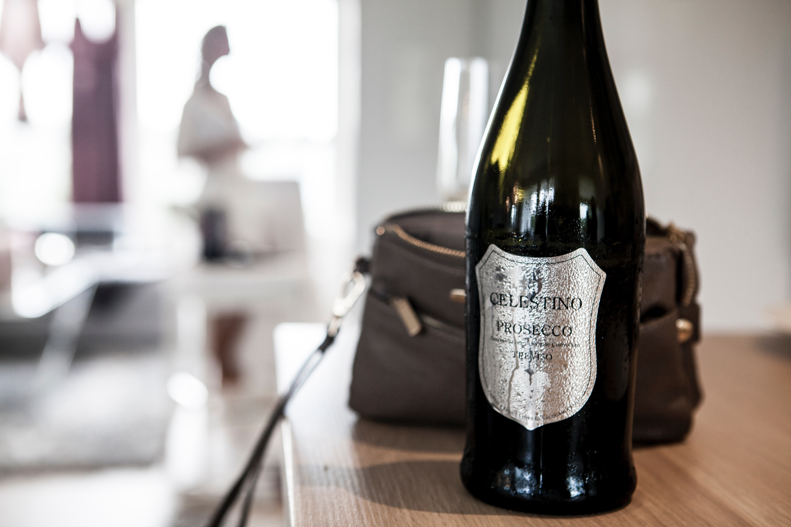

PLÉNITUDE 2
Dom Pérignon elevated to its second life.

VINTAGE
Harmony achieved.

ROSÉ
The thrill of the unknown.
Dom Pérignon elevated to its second life.
Harmony achieved.
The thrill of the unknown.
SUBSCRIBE | TERMS & CONDITIONS | PRIVACY & COOKIES
GUIDELINES FOR STORING CHAMPAGNE | LANGUAGE | COUNTRY/REGION
©️ DOM PÉRIGNON